发信人: lvganyu (野协菌), 信区: outdoor
标 题: 2015冬训总结--------孙行
发信站: 饮水思源 (2015年01月31日01:06:01 星期六)
期待已久的冬训终于到来了，当我只身一人先大部队一步从西安来到北京，找到酒店的时
候我被镇住了，三间房，三间二人间，可是我们有18个人啊。。。。。。不管了，趁他们
没来先进去洗个澡先，洗完澡大部队终于到了，估计如家的前台也被这种六人一间房的奇
葩们天雷滚滚的劈了一下，值得一提的是当我们从天池峡谷出来回到这家酒店的时候被告
知由于我们六人一间的住法，这家店被查出来了，不能再这样住了。。。。。。
当天晚上便是东道主高神给我们接风洗尘，吃好吃的！！！不多说，上图。
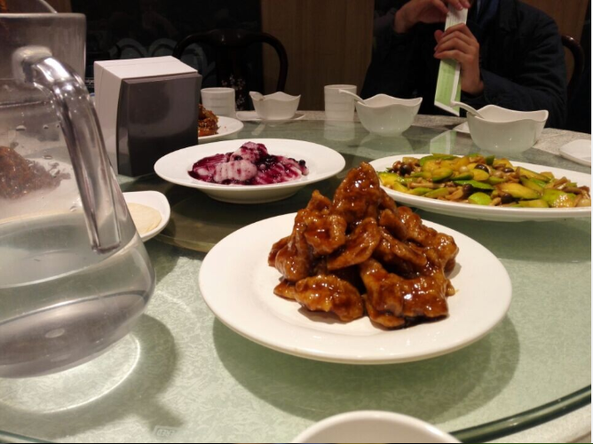 screen.width - 200){this.width = screen.width - 200}">
从此时我才逐渐意识到，高神不仅是一个淘便宜装备的高手，也是一个代金券吃大餐的高
手，膜拜！跪舔！
不得不说，灵山没雪，那还去什么去啊。。。北京的第二天休整，下午出发去南山滑雪场
，练习雪 地 技 术，醉了。当我们大部队挤进郊81，蓦地发现，为什么地上躺着胡青青的
osprey精灵！！！这丫竟然去上厕所了。。。无奈，我先去等她，大部队先走这车可是一
小时一趟啊。
在密云我算是见识到了北京黑车的普及了，又想起去年杆菌一脸幸灾乐祸看着两个黑车司
机吵架的场景，大家自行脑补。
滑雪场冷啊，有多冷？上图，我上了个厕所就冻成这样了。
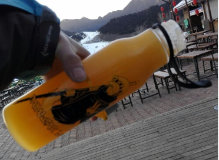 screen.width - 200){this.width = screen.width - 200}">
来滑雪场可不是来滑雪的，我们是来冬训的，雪地制动，保护站等等巴拉巴拉，上图吧，
不想码字了。
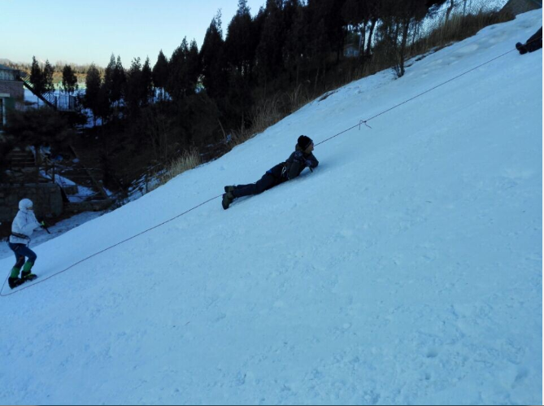 screen.width - 200){this.width = screen.width - 200}">
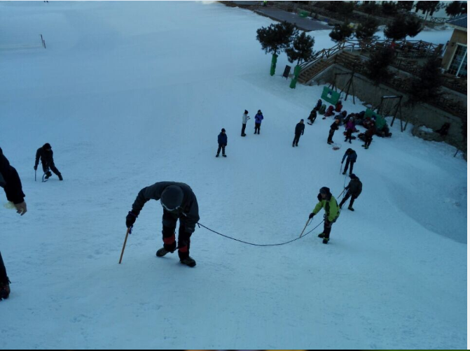 screen.width - 200){this.width = screen.width - 200}">
大家猜猜这是谁？
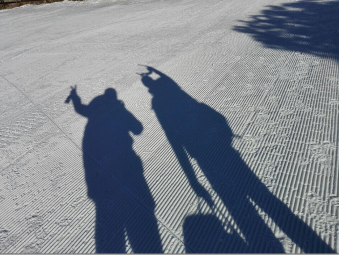 screen.width - 200){this.width = screen.width - 200}">
接下来便前往天池峡谷进行冰上技术的学习。冰壁，冰坡，没人和我们争场地真是开心，
由于午餐太捉急，我机智的选择了早餐吃五个馒头跳过午餐这一做法。
布绳
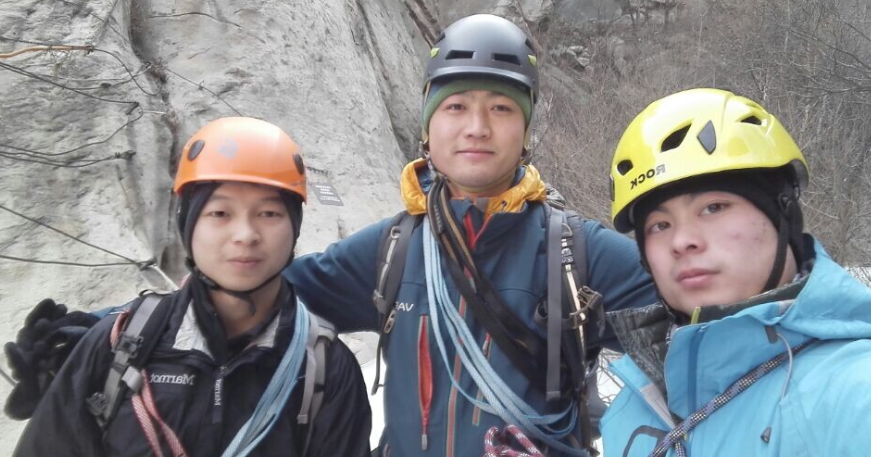 screen.width - 200){this.width = screen.width - 200}">
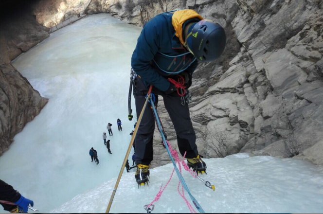 screen.width - 200){this.width = screen.width - 200}">
冰壁冰坡
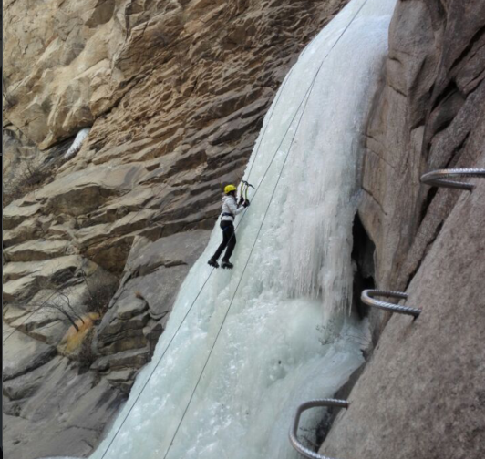 screen.width - 200){this.width = screen.width - 200}">
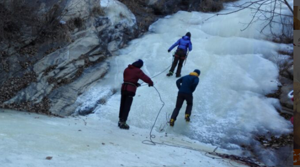 screen.width - 200){this.width = screen.width - 200}">
附上某人收绳未带保护器皂片一张
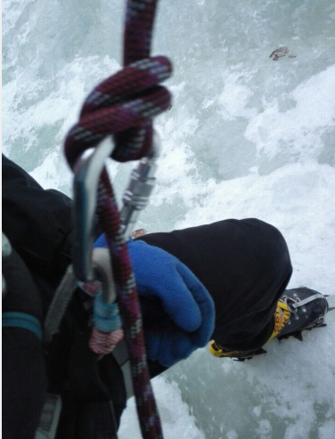 screen.width - 200){this.width = screen.width - 200}">
除了冰壁冰坡，最后一天我们还玩了攀岩
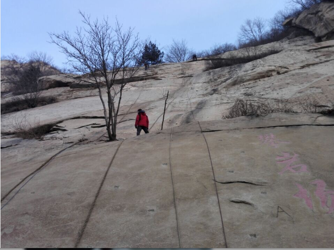 screen.width - 200){this.width = screen.width - 200}">
这次的冬训，练习的时间更久，队伍规模也更大，相信大家都有很多的收获，期待明年的
冬训办的更好。
--
※ 来源:·饮水思源 bbs.sjtu.edu.cn·[FROM: 120.4.206.195]
|